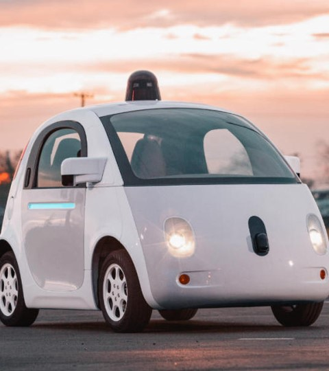
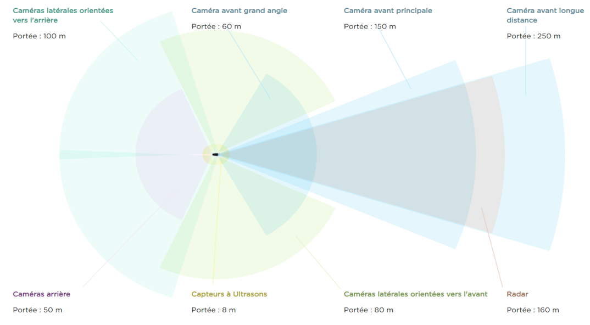
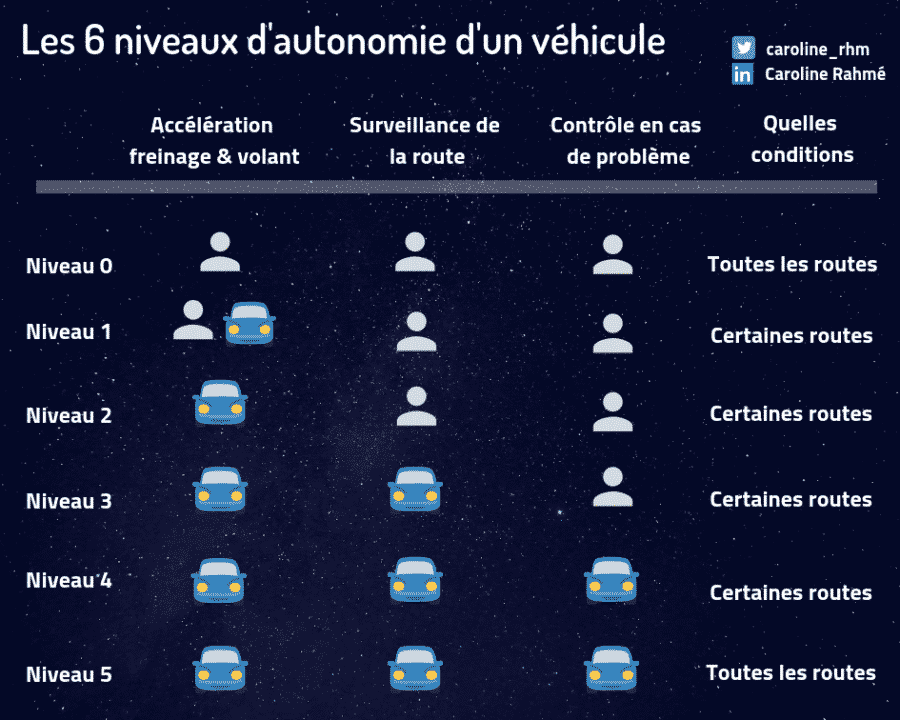

Présentation
Tout d’abord, qu’est-ce qu’une voiture autonome ?
Une voiture autonome est tout simplement une voiture qui roule sans conducteur. La course à la voiture sans conducteur a débuté dans les années 1970 et ne cesse depuis de s'accélérer.
Comment est-ce possible ?
Grâce aux technologies mises en place par les professionnels de la domotique automobile. le véhicule est équipé d'une série de capteurs laser (lidar), de radars et de caméras qui lui servent à modéliser son environnement en trois dimensions et à identifier les éléments qui le composent (marquage au sol, signalisation, bâtiments, véhicules, piétons...) afin qu'il puisse se guider en respectant les règles de circulation et éviter les obstacles. L'ensemble de ces informations est traité par un programme d'intelligence artificielle qui décide des manœuvres à effectuer en agissant sur des servocommandes contrôlant les principales fonctions de la voiture : direction, freinage, accélération, clignotants...
Comment ça marche ?
Une voiture autonome est truffée de capteurs. Ce sont ces capteurs qui envoient diverses informations. Ils incluent les caméras et les radars. A ces capteurs, s'ajoute une cartographie à haute résolution. Ces éléments fournissent des informations précieuses sur la position en temps réel du véhicule et son environnement de conduite. Ils permettent, en d'autres termes, de planter le décor. La voiture n'étant pas seule sur la route, elle intègre divers systèmes de communication pour échanger des informations avec les autres véhicules. Elle doit en outre posséder une intelligence artificielle. Dans quel but ? Pour pouvoir prendre rapidement des décisions. Comme un être humain. L'électronique agit plus rapidement qu'une personne, un grand avantage sur la route lorsque la distance de freinage est faible. D'après l'observatoire de l'automobile Cetelem, 55 % des conducteurs du monde entier sont prêts à acquérir une voiture autonome. D'ici quelques années, ils sauront si cette technologie prometteuse est à la hauteur des attentes.
Les débuts
Les premiers essais de voiture autonome remontent aux années 1970 et eurent lieu au Japon. La décennie suivante, plusieurs laboratoires universitaires européens et nord-américains spécialisés en robotique ainsi que le constructeur Mercedes-Benz ont testé avec succès des prototypes. Le développement s'est poursuivi dans les années 1990 avec notamment deux essais sur route ouverte de longue distance : un aller-retour Munich-Copenhague par un véhicule autonome Daimler-Benz ; un trajet entre Washington DC et San Diego (États-Unis) effectué par la Navlab mise au point par les universités de Carnegie Mellon et de Pittsburgh (États-Unis).
Google et la Google CarC'est à partir de 2010 que le sujet devient réellement médiatique lorsque Google annonce travailler sur cette technologie. Le géant californien a commencé par modifier des véhicules de série des marques Lexus et Toyota avant de présenter en 2014 une « Google car » entièrement conçue par ses ingénieurs. L'année suivante, Google annonçait que ses voitures avaient parcouru 2,7 millions de kilomètres. En octobre 2010, Google annonce avoir conçu un système de pilotage automatique pour automobile aidé de radars, caméras vidéo et GPS, déjà installé sur sept véhicules — six Toyota Prius et une Audi TT. Le projet est lancé par Sebastian Thrun, également directeur du Stanford Artificial Intelligence Laboratory et co-inventeur de l'application Google Street View. Il est ensuite repris par Chris Urmson. il s'agit d'un véhicule électrique d'une autonomie maximale de 130 kilomètres et pouvant atteindre la vitesse de 40 km/h. Leur particularité est de n'avoir ni volant, ni commande d'accélérateur et de frein. Après avoir été testée sur piste d'essai, la « Google Car » entièrement conçue par Google circule depuis l'été 2015 sur les routes californiennes avec une personne à bord pouvant reprendre le contrôle. Comment elle fonctionne ?Le véhicule doit être conduit de manière ordinaire une fois sur le trajet qu'il empruntera ensuite de manière autonome, afin qu'une équipe vérifie que le véhicule a enregistré tous les signaux importants le long du trajet. Le véhicule n'a plus ensuite qu'à gérer les modifications de signalisation pendant son trajet autonome. |
 |
Elon Musk et la TeslaContrairement à la Google Car, La Tesla intègre quand à elle un « système » de conduite autonome, je vais vous montrer une vidéo de la conduite sans les mains de 2018. |
Les technologies utilisées :Huit caméras panoramiques offrent une visibilité à 360° autour de la voiture avec une portée de 250 m. À cela viennent s'ajouter douze capteurs à ultrasons nouvelle génération, permettant de détecter les objets solides ou les liquides avec une portée et une précision quasiment deux fois supérieure au système précédent. Un radar avant à haute capacité de traitement complète les données environnementales grâce à une longueur d'onde redondante capable de voir à travers de fortes pluies, le brouillard, la poussière et même la voiture qui vous précède. Afin de traiter toutes ces données, un nouvel ordinateur de bord doté d'une puissance de calcul 40 fois supérieure à la génération précédente s'appuie sur le nouveau réseau neuronal Tesla pour les logiciels de visualisation, de sonar et de radar. Ce système offre ainsi une perception de l'environnement infiniment supérieure à celle d'un conducteur, surveillant simultanément toutes les directions, sur des longueurs d'ondes imperceptibles par l'homme. Comment ça marche ?Il vous suffit de dire à votre voiture où vous souhaitez vous rendre. Si vous restez silencieux, votre Tesla consultera votre agenda et vous conduira le cas échéant à votre prochain rendez-vous. Votre Tesla déterminera la meilleure route à suivre, navigant en toute sécurité au travers d'intersections complexes, d'environnements urbains et sur autoroute. En arrivant à destination, descendez simplement de votre voiture, enclenchez le mode recherche d'emplacement et laissez votre Tesla chercher une place et se garer pour vous. Une simple pression du doigt sur votre téléphone et elle viendra vous retrouver. |
 |
La LégislationSi la technologie a beaucoup progressé, il faut encore que les législations évoluent pour créer un statut à la voiture autonome qui permette notamment de définir la responsabilité en cas d'accident. Aux États-Unis, cinq États (Californie, District de Columbia, Floride, Michigan, Nevada) ont autorisé la circulation des voitures autonomes sur routes ouvertes. En France, ce sont 2.000 kilomètres de routes ouvertes qui devraient être praticables à Bordeaux, en Isère, en Île-de-France et à Strasbourg. Pour le moment la conduite de voiture autonome est possible en France, aux USA, Royaume-Uni et Allemagne |
|  |
La classification des véhicules autonomes :
• Niveau 0 : Aucune automatisation : Le conducteur garde un contrôle total et à tout instant des fonctions principales du véhicule (moteur, accélérateur, direction, freins).
|

|
6. The powerful XSS attacksThese attacks are similar to SQL injections in that hackers use Web form fields from HTML codes to access them. However, they are much more dangerous than SQL injections. XSS (aka Cross-site scripting) attacks refer to the insertion of malicious script tags and JavaScript into your website, which can spread to the accounts of all visitors to the page they were visited on. inserted. To prevent XSS attacks, make sure that visitors do not have the privilege (or opportunity) to insert JavaScript or script tags anywhere on your site. |
7. Passwords and protectionIt is best to use ever more complex passwords, mixing lowercase letters, uppercase letters, numbers, and special characters for all your accounts and especially for the administrator account of your site. Never use simple passwords. Do not use passwords such as your child's name or birthday, as hackers can usually access this information easily. Also, make sure that everyone who has access to your website uses a secure password that is impossible to guess. a user’s use of a weak password could endanger your entire website and visitor accounts. |

|

|
8. Web security toolsFortunately, there are effective tools that can analyze the overall security level of your site. After applying all of the security measures outlined above, it's time to check the security of your website. There are several tools available in premium and freemium versions, some of which include web applications like Netsparker, OpenVAS and SecurityHeaders. Netsparker offers foolproof security against SQL injections and XSS attacks, but you can use any other security tool that performs similar actions. |